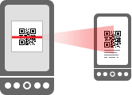

In addition to scanning QR Codes, QRCoder can also generate a QR Code and display it on your screen. Then you can show it to a friend, and let them scan the QR Code with their phone:

To use this feature, press the Encoder button from the main screen. Then choose whether you want to share a contact, a bookmark, or text. A QR Code will be generated automatically. When you're done, press Back or Home.